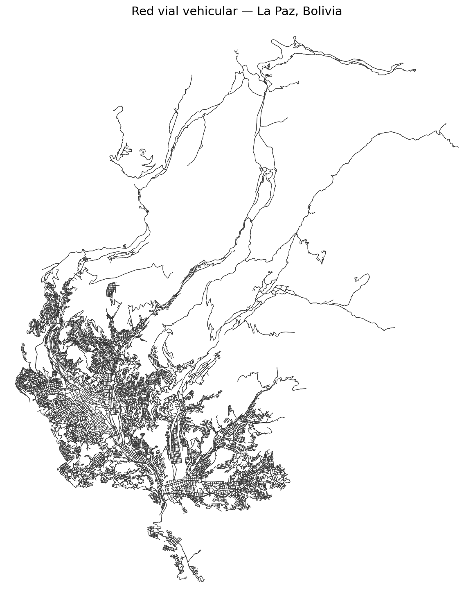
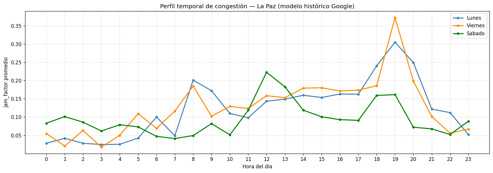
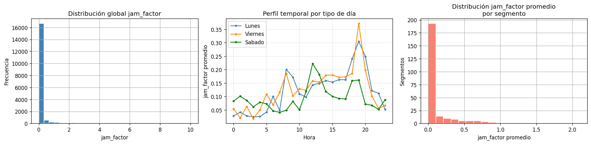
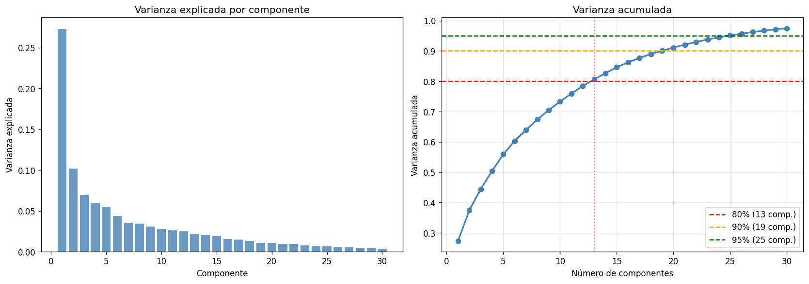
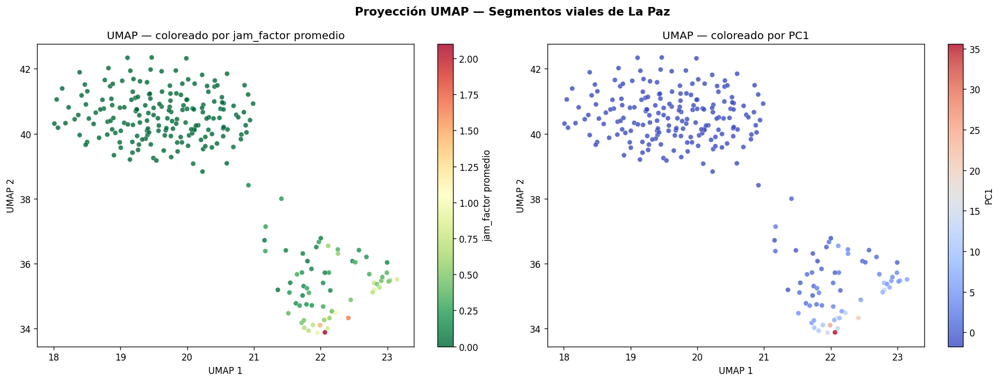
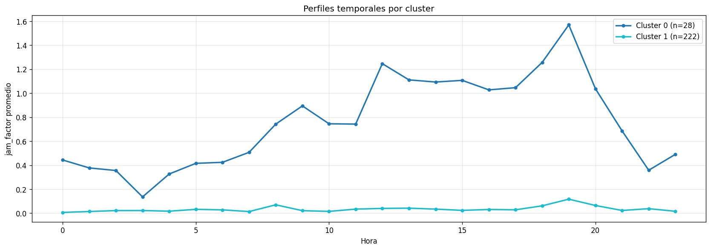
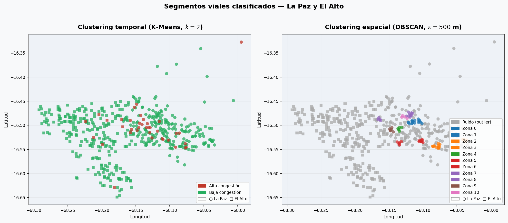
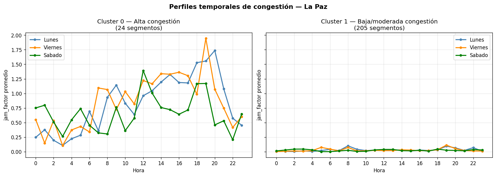

La Paz descansa en una hoya montañosa a 3 600 m.s.n.m.; El Alto se extiende en el altiplano a 4 100 m.s.n.m. Apenas unas autopistas de alta pendiente las conectan: cualquier incidente desata una cascada de congestión.
En lugar de forzar dos categorías rígidas, el modelo puede descubrir grupos sutiles que un humano nunca habría definido a priori.
Esta pregunta es mucho más poderosa cuando los datos son complejos — como el tráfico de una conurbación de montaña.
La Distance Matrix API de Google devuelve el tiempo de viaje con y sin tráfico entre pares de puntos. De ahí:
OSMnx descarga gratis el grafo vial de OpenStreetMap. La Paz tiene ≈ 37 100 segmentos de calle, cada uno con coordenadas, longitud y tipo de vía.

Por la cuota de la API se recolectaron 4 días representativos, con sus 24 horas cada uno:

Cada fila es un segmento; cada columna, el jam_factor promedio en una combinación {día, hora}:

PCA busca el ángulo de iluminación que produce la sombra más informativa: la proyección que preserva la mayor variación entre puntos.
PC1 ≈ nivel general de congestión · PC2 ≈ laboral vs. sábado.

Si PCA es una foto aérea (proyección lineal), UMAP hace un mapa cartográfico de la variedad curva: aplana a 2D manteniendo vecinos como vecinos.

Un barrio es una zona donde las casas están juntas, separada de otras por áreas vacías. DBSCAN busca esas islas sobre las coordenadas GPS (distancia haversine, eps = 500 m).
Asignación iterativa: elegir representantes, asignar al más parecido, recalcular el promedio, repetir. Minimiza la distancia al centroide:
Método del codo + índice de silueta señalan k = 2 (silueta = 0,766): clusters genuinos, no conveniencia.


| Zona | Alta cong. | Baja cong. |
|---|---|---|
| La Paz | 10,8 % | 89,2 % |
| El Alto | 4,0 % | 96,0 % |
Solo se midieron 4 días. NMF completa la semana sin gastar cuota: descompone X ≈ W · H con W, H ≥ 0.
La no-negatividad es clave: el jam_factor nunca es negativo, así los arquetipos y pesos son directamente interpretables.
| Arq. | Pico | Interpretación |
|---|---|---|
| A0 | 19:00 | Salida laboral vespertina |
| A1 | 08:00 | Entrada laboral matutina |
| A2 | 17:00 | Tarde laboral / comercial |
| A3 | 14:00 | Actividad comercial mediodía |
| A4 | 07:00 | Madrugada / logística |
| A5 | 12:00 | Pausa del mediodía residencial |
Interpola los arquetipos para los días faltantes (martes, jueves, domingo). PCHIP preserva la monotonía: no inventa picos ni valles artificiales como el spline cúbico al extrapolar.
| Día | Tipo | Confianza |
|---|---|---|
| Lunes | Real | Alta |
| Martes | Interpolado | Media |
| Miércoles | Real | Alta |
| Jueves | Interpolado | Media |
| Viernes | Real | Alta |
| Sábado | Real | Alta |
| Domingo | Extrapolado | Baja |
Construido con Flask (servidor Python) y Folium (mapas Leaflet en el navegador).
| Indicador | La Paz | El Alto |
|---|---|---|
| Varianza PCA (13) | 86,8 % | 96,1 % |
| Alta congestión | 10,8 % | 4,0 % |
| NMF RMSE-CV | 0,462 | 0,435 |

Sin etiquetar ningún segmento, los modelos descubrieron una dicotomía: hay calles que casi siempre se congestionan y otras que casi nunca lo hacen.